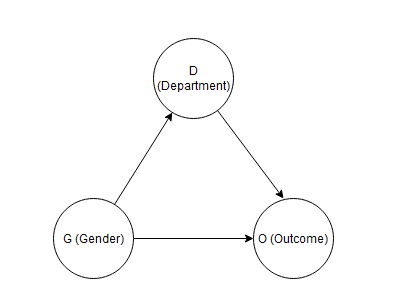
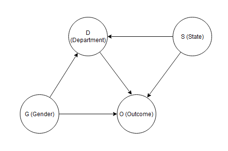
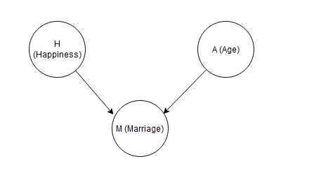
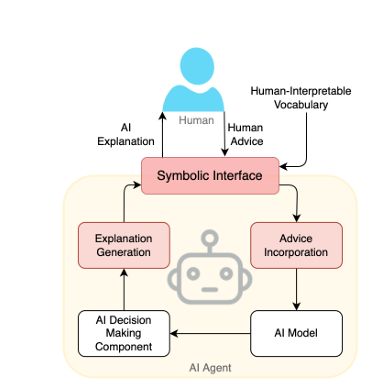
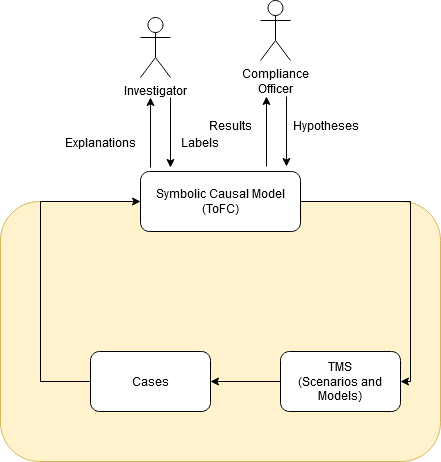

Science is the sum total of human knowledge gained by man through experimentation and observation
This is the definition of science I recall from my days in middle school. Alas, it is incomplete. It omits perhaps the most important step of the scientific method - conjecture.
Theories and Explanations
The scientific method is a four step process
Formulate a hypothesis: This initial step involves creating a conjecture or educated guess based on existing knowledge or observations. It sets the stage for experimentation.
Deduce testable consequences of the hypothesis: This step involves making predictions that can be tested through experimentation.
Perform an experiment and collect evidence: Conduct experiments to gather data and observe outcomes.
Update your belief in the hypothesis: Based on the experimental evidence, revise or discard the hypothesis.
If your hypothesis withstands repeated testing, it evolves into a theory supported by a larger body of evidence. If it does not, you discard your hypothesis and the process begins anew.
Formulating a hypothesis or conjecturing is perhaps the hardest of these steps as it requires imagination like Einstein or even courage like Copernicus.
Critiquing a conjecture through steps 2 - 4 of the scientific method ensures that only valid hypotheses survive and grow into scientific theories. Science, like capitalism thrives in creative destruction.
David Deutch, a pioneering quantum physicist argues that good scientific theories don’t just fit the data and produce good predictions; they also provide good explanations of the underlying mechanisms that produce the phenomenon in question.Good theories explain what causes a phenomenon - they should also be causal explanations.
According to Deutch, a good explanatory theory should meet the following criteria.
Hard to vary.
In his book “The Beginning of Infinity”,Deutch uses Norse mythology as an example of a theory that is easy to vary.
According to Norse mythology,the seasons change according to the fortunes of Freyr, the god of spring, in his eternal war with the forces of cold and darkness. When Freyr wins, the earth experiences summer while when he loses, winter sets in. This is a poor explanation because any variation in the seasons can be attributed to Freyr’s vicissitudes.It is extremely easy to vary to fit any observation.Such explanations are not even worth testing.
In contrast,the Tilt theory of seasons correctly explains that seasons are caused by the tilt of the earth’s axis of rotation relative to the plane of orbit.The hemisphere in which the sun’s rays fall vertically have summer while the hemisphere where the rays strike obliquely have winter. This theory, constrained by what we know about geometry,heat and mechanics of the earth’s motion is much harder to vary and is thus a much better explanation.
Falsifiable
Falsifiability, introduced by Karl Popper, is a necessary criterion which makes a theory scientific. A theory has to make testable predictions which can be validated through observations. A scientific theory should thus be falsifiable.
The tilt theory of seasons, for example can make predictions for seasons in both hemispheres. If these predictions are refuted, the theory can be discarded.
Interestingly, the Norse myth is also falsifiable. As per the myth, if Freyr is winning, the whole earth will enjoy summer which is easily disproved by observing different seasons in the northern and southern hemispheres. Falsifiability is thus a necessary not a sufficient criterion for a scientific theory.
Reach
A powerful explanatory theory will also have reach. A theory with reach will be applicable to a wide variety of cases and phenomenon beyond its original scope.
Einstein’s theory of general relativity is perhaps the finest example of a theory with reach. Einstein’s field equations predicted the existence of black holes and gravitational waves, something that never occurred to Einstein when he originally formulated the theory.
Causality
Good theories should be causal. But what does it mean to say C causes E ?
According to the counterfactual definition of causality, if C is a cause of E, then E would not have occurred if not for C. In other words, if we could imagine a world where everything else remains the same but C did not happen; then if C is the cause of E;E would not have occurred.
This is also referred to as “but-for causation” in legal circles.For example,if a defendant fired a gun(C) and the bullet killed the victim(E), the firing of a gun is a “but-for” or “necessary” cause of death. If we imagine a world where the defendant did not fire his gun, the victim would still be alive.
A more stringent version of causation is sufficient causation.A cause C is considered Sufficient for an effect E if the presence of C guarantees the occurrence of E. Consider someone lighting a match that causes a fire to break out. Now, the presence of oxygen and the act of lighting a match are both necessary causes for the fire. The fire would not have occurred in the absence of one of them. However, only lighting the match is a sufficient cause for the fire.
In the hard sciences, theories are almost always causal and provides an explanation of the underlying mechanism of a phenomenon. However, this is not always the case in the social sciences. When theories are not carefully constructed to account for the true data generating process, data analysis can often lead us astray. The Simpson’s paradox is a notable example of this.
Simpson’s Paradox
The most striking example of the Simpson’s paradox occurred in 1973 when Eugene Hammel, the associate dean at the University of California,Berkeley observed a concerning trend in the university’s admission rates for men and women. The data showed that only 44 percent of men who applied to graduate school had been accepted compared to 30 percent of women.
A version of the data used for this study is available in the rethinking package in R.
library(rethinking)
data("UCBadmit")At the university level, we can calculate the admission rate for both men and women.
library(dplyr)
UCBadmit %>% select(applicant.gender,admit,applications)%>%
group_by(applicant.gender) %>%
summarize(Total_admit = sum(admit),
Total_applications = sum(applications))%>%
mutate(Admit_rate = Total_admit/Total_applications*100)## # A tibble: 2 × 4
## applicant.gender Total_admit Total_applications Admit_rate
## <fct> <int> <int> <dbl>
## 1 female 557 1835 30.4
## 2 male 1198 2691 44.5This suggests there is clear evidence of bias in favor of men assuming all applicants are equally qualified. However, if we look at this data at a department level the results can lead us to the opposite conclusion.
UCBadmit %>% select(dept, applicant.gender,admit,applications)%>%
group_by(dept,applicant.gender) %>%
summarize(Total_admit = sum(admit),
Total_applications = sum(applications))%>%
mutate(Admit_rate = Total_admit/Total_applications*100)## # A tibble: 12 × 5
## # Groups: dept [6]
## dept applicant.gender Total_admit Total_applications Admit_rate
## <fct> <fct> <int> <int> <dbl>
## 1 A female 89 108 82.4
## 2 A male 512 825 62.1
## 3 B female 17 25 68
## 4 B male 353 560 63.0
## 5 C female 202 593 34.1
## 6 C male 120 325 36.9
## 7 D female 131 375 34.9
## 8 D male 138 417 33.1
## 9 E female 94 393 23.9
## 10 E male 53 191 27.7
## 11 F female 24 341 7.04
## 12 F male 22 373 5.90In 4 out of 6 departments, the admission rate for females is actually higher than that of males. Now which is the correct way of interpreting the data ?
This discrepancy requires an understanding of the data generating mechanism. Admission decisions at Berkeley were taken independently by each department,so an admit/reject decision could be influenced by the department to which an applicant applied.
This mechanism can easily be captured using a causal diagram.

Figure 1: Causal Diagram of Admissions Outcomes
This causal diagram indicates that there is a direct impact of gender(G) on admission outcomes(O) as well as an indirect effect mediated through Department(D). To study the possibility of discrimination, we are only interested in the direct effect of gender on outcomes. So we need to mute the indirect effect of Gender through Department.
If you are familiar with causal diagrams, you will realize that G->D->O is a “pipe”, and this path can be blocked by conditioning on D. In other words, we should analyze the data at the department level. This analysis leads us to conclude that there was indeed no systematic discrimination against women at UC Berkeley.
Now consider the possibility that the state of residence also impacts the department to which a candidate applies and the outcome of the application. Perhaps a state has excellent prep schools for certain disciplines or the head of admissions of each department has a bias towards his or her home state.
In this case, the causal diagram will also include the State of Residence(S) as shown below.

Figure 2: Alternate Causal Diagram of Admissions Outcomes
Here you might recognize that G->D<-S is a collider and conditioning on D opens a spurious path G->D<-S->O. In fact, to block all indirect effects, you have to also condition on S.
Even if you do not follow the details, the key takeaway is that your theory about how the admission process works will determine the type of data analysis you will carry out.
The Why in AML
In Anti Money Laundering (AML),the Five W’s and 1 H are fundamental to investigating and reporting suspicious behavior.
- Who is conducting the suspicious activity?
- What instruments or mechanisms are being used to facilitate the suspected transactions ?
- When did the suspicious activity occur?
- Where did the suspicious activity take place?
- Why is the activity suspicious?
- How did the suspicious activity occur?
The first four questions (Who, What, When and Where) are straightforward to answer. They entail only a description of some entity and activity . The last two (Why and How) are more interesting.
Why is an episode of transactional activity suspicious ?
As the Fincen guidance lays out, an episode is suspicious if it conforms to some pattern of suspicious activity or red flag, such as:
Unusually complex series of transactions indicative of layering activity involving multiple accounts, banks, parties, jurisdictions;
An episode of activity is suspicious because it is consistent with a red flag. This is the answer to “Why?”
“How” describes how the episode of activity fits into the aforementioned pattern.
In other words, the “Why” is the cause of suspicion. As per the counterfactual definition of causality,this also means that if the transactions did not fit in with the pattern, there would be no reason to consider the transaction suspicious. We are interested in identifying “necessary” causation. Typically, none of these red flags or patterns in isolation guarantees the activity in question is suspicious; it is not a sufficient cause.
This suggests a very scientific approach to investigations.
Every alert or case begins with a null hypothesis (H0) and an alternate hypothesis (H1)
H0: The entity did not carry out transactions consistent with a pattern of interest.
H1: The entity carried out transactions with the pattern of interest.
An investigator is trying to collect evidence to reject the null hypothesis. If sufficient evidence; which is determined by the risk tolerance of the institution; is available, then a SAR has to be filed outlining the “Why” and the “How”—the hypothesis tested and the evidence gathered.
Transaction Monitoring Systems need to evolve
Today, transaction monitoring systems generate a case(a collection of alerts) and leave investigators to come up with their own hypotheses. This is equivalent to presenting the results of an experiment without stating the hypothesis or theory being tested.
To make investigators productive, transaction monitoring systems should evolve from just presenting a collection of alerts to also presenting the hypothesis being evaluated.
A hypothesis is an explanation for potentially nefarious activity - a red flag. A good hypothesis or explanations should adhere to at least the first two criteria laid out by Deutch.
- It should be hard to vary
- It should be falsifiable
The more specific a pattern or red flag is, the harder it is to vary. For example, “the behavior of the entity changed” is a poor explanation for suspicious activity. A change in behavior could also be because someone sold their car or their house.
A potentially good explanation for suspicious activity is:
Transactions that are not commensurate with the stated business type and/or that are unusual and unexpected in comparison with the volumes of similar businesses operating in the same locale.
Given the hypothesis is specific, it is also eminently falsifiable.
In summary, a good transaction monitoring system doesn’t just generate a case or collection of alerts, it will also suggest good hypotheses that explains why the entity in question is suspicious.
The Problem with AML Detection Models
This brings us to a dichotomy in the objectives of AML models. We want AML models to have high predictive power so that AML programs are efficient and effective. However, the key expected output of AML Transaction Monitoring is a well constructed SAR which answers the Who, What , Where, When, How and most importantly the Why.
However, a key lesson of causal analysis is that a good predictive model need not be good causal model.
When we design a statisitcal model, we must decide where we want to understand causes or just predict.These are not the same goal and different models are needed for each - Richard Mclreath
This problem is particularly acute in the presence of colliders. Consider a dataset comprising Age,a binary flag indicating marital status and a metric for happiness. This simulated dataset is available as part of the rethinking package and has been generated in line with the causal relationship visualized below - a collider.The arrows from Happiness(H) and Age(A) collide at marriage(M).
This suggests that individuals who are generally happy and reach a marriageable age get married.

Figure 3: Causal Diagram of Marriage
As a happiness researcher who gets access to this data we might be interested in identifying the causes or predictors of happiness.
#Simulate data
d <- sim_happiness(seed=1, N_years=1000)
#Review summary of the data
precis(d)## mean sd 5.5% 94.5% histogram
## age 3.300000e+01 18.7688832 4.000000 62.000000 ▇▇▇▇▇▇▇▇▇▇▇▇▇
## married 2.838462e-01 0.4510366 0.000000 1.000000 ▇▁▁▁▁▁▁▁▁▂
## happiness -1.000070e-16 1.2144211 -1.789474 1.789474 ▇▅▇▅▅▇▅▇Given we deal with classification problems in financial crime, I will engineer a binary happiness flag with the goal of predicting happiness.
d$happiness_flag <- as.factor(ifelse(d$happiness<0,0,1))
d$married <- as.factor(d$married)We can partition the data into a train and validation dataset.
#Get number of records
N <- nrow(d)
set.seed(0)
#Split into train and test sets
train_index <- sample(1:N,0.8*N,replace=FALSE)
d_train <- d[train_index,]
d_valid <- d[-train_index,]We can consider three predictive models given this data.
First, we can train a model using just Age.
glm1 <- glm( happiness_flag ~ age,data=d_train, family = "binomial")Second, we can train a model using just marital status.
glm2 <- glm( happiness_flag ~ married,data=d_train, family = "binomial")Third, we can train a model considering both Age and marital status.
glm3 <- glm(happiness_flag~ age + married,data=d_train, family = "binomial")We can evaluate all three models on the validation set and pick the best performing model.
#Get predicted probabilities
valid_preds1 <- predict(glm1,d_valid, type = "response")
valid_preds2 <- predict(glm2,d_valid, type = "response")
valid_preds3 <- predict(glm3,d_valid, type = "response") Below we calculate the Area under the ROC curve for each of the three models.
library(pROC)
roc1 <- roc(d_valid$happiness_flag,valid_preds1)
roc2 <- roc(d_valid$happiness_flag,valid_preds2)
roc3 <- roc(d_valid$happiness_flag,valid_preds3)
paste0("For Model 1, Area under the curve:", round(roc1$auc,2))## [1] "For Model 1, Area under the curve:0.51"paste0("For Model 2, Area under the curve:",round(roc2$auc,2))## [1] "For Model 2, Area under the curve:0.68"paste0("For Model 3, Area under the curve:",round(roc3$auc,2))## [1] "For Model 3, Area under the curve:0.74"Quite clearly, the third model is the best predictive model and would be selected if prediction accuracy is our goal.
However, let’s analyze this model.
summary(glm3)##
## Call:
## glm(formula = happiness_flag ~ age + married, family = "binomial",
## data = d_train)
##
## Coefficients:
## Estimate Std. Error z value Pr(>|z|)
## (Intercept) 0.23883 0.13381 1.785 0.0743 .
## age -0.02786 0.00426 -6.540 6.17e-11 ***
## married1 2.45988 0.19361 12.705 < 2e-16 ***
## ---
## Signif. codes: 0 '***' 0.001 '**' 0.01 '*' 0.05 '.' 0.1 ' ' 1
##
## (Dispersion parameter for binomial family taken to be 1)
##
## Null deviance: 1441.6 on 1039 degrees of freedom
## Residual deviance: 1238.8 on 1037 degrees of freedom
## AIC: 1244.8
##
## Number of Fisher Scoring iterations: 4The estimates suggest that age and marital status are both statistically significant when predicting happiness.
If this were a model to predict financial crime, we would highlight both these variables as interesting to an investigator, which is misleading given the underlying data..
Instead, let’s look more closely at the first model
summary(glm1)##
## Call:
## glm(formula = happiness_flag ~ age, family = "binomial", data = d_train)
##
## Coefficients:
## Estimate Std. Error z value Pr(>|z|)
## (Intercept) -0.0079798 0.1267758 -0.063 0.950
## age -0.0004523 0.0033126 -0.137 0.891
##
## (Dispersion parameter for binomial family taken to be 1)
##
## Null deviance: 1441.6 on 1039 degrees of freedom
## Residual deviance: 1441.6 on 1038 degrees of freedom
## AIC: 1445.6
##
## Number of Fisher Scoring iterations: 3We see that age is not a significant predictor of happiness.
When we include marital status in the model, age becomes statistically significant due to collider bias. Conditioning on a collider can end up inducing spurious relationships between variables being modeled.
The key lesson is high performing ML models might be good predictors of financial crime but they might mislead investigators who are trying to answer the “Why?” of financial crime. ML models are inductive and are not informed by theory. They do not care about cause, only association. Hence predictions of ML models or post-hoc explanations of these models will not have causal logic
Bridging This Gap
We do not want to give up on using the best performing predictive models, whether they are rule-based scenarios or neural nets. How do we meet these competing objectives of AML Detection—good predictive performance and reliable causal explanations?
In this paper, Kambhampati et al proposes an architecture of an AI system that exposes a symbolic interface to a human user.

Figure 4: Overall architecture of an AI system exposing a symboic interface to a human user
This symbolic interface should operate using symbols that have meaning to the human in the loop - a compliance officer or an investigator in the case of AML. The symbolic interface enables the AI system to provide explanations (hopefully causal) of its decisions to humans (investigators) while accepting guidance/preferences from humans(investigators and compliance officers) in the form of advice or feedback.
Further, this symbolic interface should allow representation of causal relations.
Theory of Transaction Monitoring
A Transaction Monitoring System is essentially a manifestation of a Financial Institution’s “Theory of Financial Crime” . They require an FI to come up with two key hypotheses:
- What are my FI’s risks - what are the risk factors and red flags that are of interest ?
- How best to mitigate them - What rules and models should be used to mitigate these risks ?
To make AML compliance scientific, we need to follow through with the next three steps of the scientific method.
- Deduce testable consequences of the hypothesis - If the scenarios or models alert, is the focal entity suspicious and worthy of a SAR ?
- Perform an experiment and collect evidence - Generate cases and get human feedback on the case
- Update your belief in the hypothesis - Use the feedback to update the two key hypotheses.
I propose a modified version of the symbolic Human - AI interface as illustrated below.

Figure 5: Symbolic Human Interface for a TMS
In this system,
- The compliance officer lays out her hypotheses which is explicitly captured in a Symbolic- Causal model that represents an institution’s Theory of Financial Crime.The relationship between the various components of the TMS is explicitly captured by the causal model
- The Data Scientist or Modeler constructs the TMS (Transaction Monitoring System) to align with this causal model.
- The TMS generates alerts
- The Symbolic Causal model consumes the alerts and generates cases along with causal Explanations.
- Investigators review the cases and provide feedback (labels)
- The causal model is revised using these labels.
- The Compliance officer approves these revisions or comes up with new hypotheses that are captured explicitly in the model.
- The TMS is modified to re-align with the institution’s revised “Theory of Financial Crime”.
Conclusion
I have laid out two key limitations with the current approach to building and maintaining Transaction Monitoring Systems
- They are ill-equipped to help investigators answer the “Why?” of AML and create meaningful SARs
- They do not facilitate the application of the scientific method to AML. When we do not approach the problem using the scientific method, is it any surprise that Transaction Monitoring Systems have shown little improvement over the last decade ?
In the next blog post, I will share a more prescriptive approach on creating a symbolic-causal model and how it can be systematically updated based on incoming labels.
References
- The Book of Why: The New Science of Cause and Effect - By Judea Pearl and Dana Mackenzie
- Statistical Rethinking: A Bayesian Course with Examples in R and Stan - By Richard McElreath
- The Beginning of Infinity - By David Deutch
- https://arxiv.org/abs/2109.09904
- https://www.fincen.gov/sites/default/files/shared/sarnarrcompletguidfinal_112003.pdf